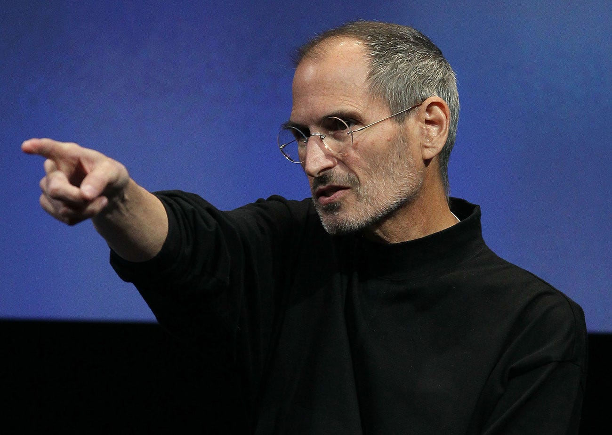

Bill Gates

Filantropia Em 2000, junto com sua esposa Melinda, Gates criou a Fundação Bill e Melinda Gates, uma organização filantrópica que tem por principais objetivos promover a pesquisa sobre a AIDS e outras doenças que atingem, em maior parte, os países em desenvolvimento. Também tem como objetivo pesquisar novos tipos de energias sustentáveis e limpas. Em 2006, Warren Buffett, então o segundo homem mais rico do mundo,[24] integrou o projeto, anunciando seu plano de contribuir com 10 milhões de ações de classe B da companhia Berkshire Hathaway (US$ 30 bilhões aproximadamente),[25] fazendo com que a fundação dobrasse de tamanho. Segundo um artigo de 2004 da revista Forbes, Gates já doou cerca de 30 bilhões de dólares para a caridade desde o ano de
Steve Jobs
Steven Paul Jobs (São Francisco, 24 de fevereiro de 1955 – Palo Alto, 5 de outubro de 2011)[2] foi um inventor, empresário e magnata americano no setor da informática. Notabilizou-se como cofundador, presidente e diretor executivo da Apple Inc.[6] e por revolucionar seis indústrias: computadores pessoais, filmes de animação, música, telefones, tablets e publicações digitais.[7] Além de sua ligação com a Apple, foi diretor executivo da empresa de animação por computação gráfica Pixar e acionista individual máximo da The Walt Disney Company.[8] Morreu no dia 5 de outubro de 2011
Linus Torvalds

linus Torvalds é casado com Tove Torvalds (Monni, de nascimento) — hexacampeã nacional de karatê na Finlândia — a qual ele conheceu no outono de 1993. Linus passava exercícios introdutórios no laboratório de informática para os alunos, e solicitou aos participantes do curso que lhe enviassem um e-mail como teste, no qual ela o convidou para saírem em um primeiro encontro. Mais tarde, Linus e Tove se casaram e tiveram três filhas: Patricia Miranda (nascida em 1996), Daniela Yolanda (nascida em 1998), e Celeste Amanda (nascida em 2000), das quais duas nasceram nos Estados Unidos da América. Linus usa suas datas de nascimento (em hexadecimal) como aceitáveis números mágicos na chamada de reinicialização do núcleo (reboot).